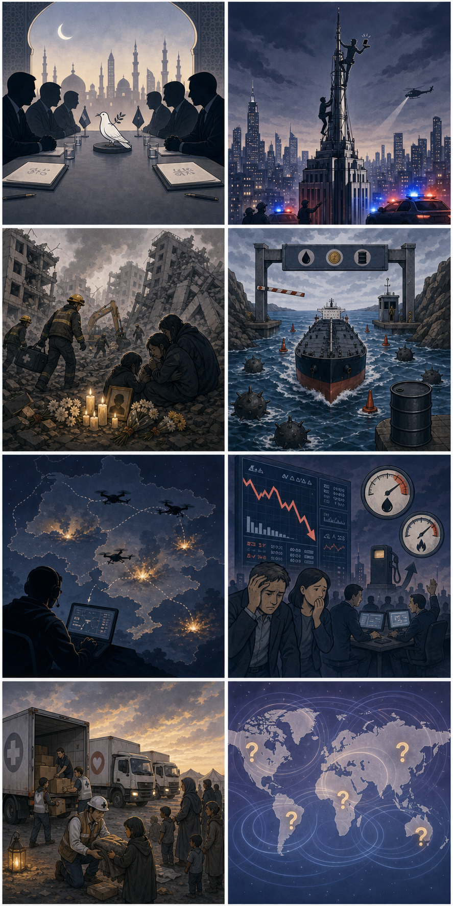

1
미국·이란, 카타르 도하에서 간접 회담 진행 보도
내용요약 미국과 이란이 카타르 도하에서 간접 회담을 진행했다는 보도가 나왔습니다. 핵·제재·역내 긴장 완화와 관련한 접점을 찾는 과정으로 풀이되지만, 구체적 합의 여부는 아직 불확실합니다.
예상여파 대화가 이어지면 중동 리스크와 에너지 시장 불안이 일부 완화될 수 있습니다. 반대로 성과가 제한되면 호르무즈·제재 이슈를 둘러싼 긴장이 재부각될 가능성이 있습니다.
2026년 7월 2일 목요일 07:00 KST · 주요 국제 이슈 5개와 8컷 만평
내용요약 미국과 이란이 카타르 도하에서 간접 회담을 진행했다는 보도가 나왔습니다. 핵·제재·역내 긴장 완화와 관련한 접점을 찾는 과정으로 풀이되지만, 구체적 합의 여부는 아직 불확실합니다.
예상여파 대화가 이어지면 중동 리스크와 에너지 시장 불안이 일부 완화될 수 있습니다. 반대로 성과가 제한되면 호르무즈·제재 이슈를 둘러싼 긴장이 재부각될 가능성이 있습니다.
내용요약 뉴욕 엠파이어스테이트빌딩 첨탑 부근에서 러시아 커플이 위험한 청혼 장면을 연출했다가 체포됐다는 소식입니다. 고층 건물 보안과 무단 침입 문제가 함께 부각됐습니다.
예상여파 관광 명소와 초고층 건물의 출입 통제·보안 점검이 강화될 수 있습니다. 온라인 화제성 행동이 공공 안전 문제로 이어지는 사례로 논의될 가능성이 큽니다.
내용요약 베네수엘라 강진 사망자가 2,295명으로 늘었다는 보도와 함께 일주일간 국가 애도 기간이 선포됐습니다. 구조·복구가 계속되는 가운데 공항 등 기반시설 피해도 큰 것으로 전해졌습니다.
예상여파 인도적 지원과 국제 구호 수요가 급증할 전망입니다. 교통·의료·식량 공급망 복구가 늦어지면 2차 피해와 질병 위험이 커질 수 있습니다.
내용요약 이란이 호르무즈 해협 무료 통과 기간을 60일로 못박았다는 보도가 나왔습니다. 통행료 추진, 기뢰 제거 기간, 에너지 수송 안전 문제가 함께 쟁점으로 떠올랐습니다.
예상여파 원유·LNG 운송비와 보험료 상승 압력이 커질 수 있습니다. 한국처럼 에너지 수입 의존도가 높은 국가는 수급 안정과 비용 관리 부담이 커질 가능성이 있습니다.
내용요약 우크라이나의 비밀 드론 부대가 러시아 내부 목표를 타격하고 있다는 보도입니다. 모스크바 인근 공격과 위성센터 파괴 주장 등 전쟁 양상이 장거리·비대칭 작전으로 확장되는 모습입니다.
예상여파 러시아의 방공·보복 대응이 강화되며 확전 위험이 커질 수 있습니다. 드론전의 중요성이 더 부각되면서 군사 기술·정보전 경쟁도 심화될 가능성이 있습니다.

상징적 표현의 만평이며 실제 인물·로고·언론사명을 사용하지 않았습니다.